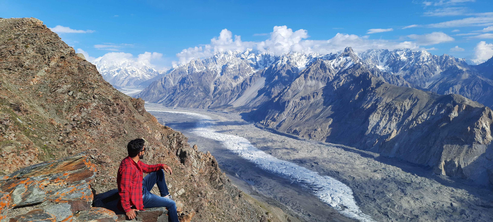

<div class="portfolio-single-load clearfix">
    <div class="custom-full-width-box">
        <div class="custom-container">
            <div class="custom-row align-items-center">
                <div class="custom-image-column">
                    
                </div>
                <div class="custom-text-column">
                    <h2 class="custom-heading">Patundas</h2>
                    <p class="custom-paragraph">
                        Patundas, a picturesque plateau in the Karakoram Range, offers stunning views of snow-capped peaks like Rakaposhi and Diran. With a population of around 200 people, it serves as a popular camping and trekking destination. Visitors can Venture on scenic hikes, witness breathtaking sunrises and sunsets, and immerse themselves in the tranquility of the alpine landscapes.
                    </p>
                </div>
            </div>
        </div>
    </div><!-- .custom-full-width-box end -->

</div><!-- end single-project -->
